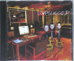
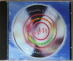
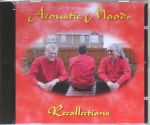
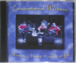
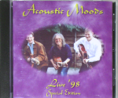
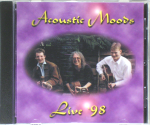

Acoustic Moods began life as a covers band, playing and recording live concerts of music mainly by progressive rock band Genesis. It wasn't too long before original compositions started to materialise, but it was several years before the band went into the studio to record any of it! To date, Chris, Tony and Dan have produced around 3 hours worth of original music.
The following albums are currently available from Acoustic Moods. Click an album cover to view more information.

Studio Albums - All Original Compositions
The aptly-named 'Plugged' contains the first hour, as the boys finally plugged in to a mixing desk, and 'Suncatcher' is made up of the next hour, taking its name from the longest track on the album. The as yet unnamed third album is still to come.
|  Plugged |
 Suncatcher |

Live Albums - Featuring a mix of Original Music and Covers
These albums showcase the best live performances of covers and Acoustic Moods originals. Much of their original material was performed numerous times before being recorded for the studio albums and new ideas would sneak in at every concert. This evolution is particularly apparent with 'Plugged' tracks, some of which were written 10 years before the album was released.
|  Recollections |
 Conventional Wisdom |
|  Live '98 - Special Edition |
 Live '98 |